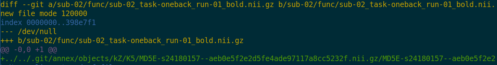

Research data management
üë©‚Äçüíªü뮂Äçüíª
with DataLad
Adina Wagner mas.to/@adswa mas.to/@adswa
|
|
|
|
Psychoinformatics lab,
Institute of Neuroscience and Medicine (INM-7) Research Center Jülich |
Interactive Slides: files.inm7.de/adina/talks/html/sfb-1280.html
PDF for download: files.inm7.de/adina/talks/pdfs/sfb-1280.pdf
Sources: https://github.com/datalad-handbook/datalad-course
Welcome & Logistics!
-
A approximate schedule for today:
- 1.00 pm: Introduction & Logistics
- 1.30 pm: Overview of DataLad + break ☕
- 2.00 pm: What's version control, and why should I care?
- 2:45 pm: Reproducibility features + break
- 3.30 pm: Data publication to the OSF + break ☕
- 4.30 pm: Outlook and/or Your Questions and Usecases
- Collaborative notes & anonymous questions: etherpad.wikimedia.org/p/Datalad@sfb1280.
- Slides are CC-BY and will be shared after the workshop. Additional workshop contents: psychoinformatics-de.github.io/rdm-course
- Some guidelines for the virtual workshop venue...
- Please mute yourself when you don't speak
- Ask questions anytime, but make use of the "Raise hand" feature
- Drop out and re-join as you please
Questions/interaction throughout the workshop
- There are no stupid questions :)
- Lively discussions are wonderful - unless its interrupting others, please feel encouraged to unmute/turn on your video to interact.
- There is room discuss specific or advanced use cases at the end. Please make a note about them in the Etherpad.
Questions/interaction after the workshop
-
If you have a question after the workshop, you can reach out for help:
- Reach out to to the DataLad team via
- Matrix (free, decentralized communication app, no app needed). We run a weekly Zoom office hour (Tuesday, 4pm Berlin time) from this room as well.
- the development repository on GitHub
- Reach out to the user community with
-
A question on neurostars.org
with a
dataladtag - Find more user tutorials or workshop recordings
- On DataLad's YouTube channel
- In the DataLad Handbook
- In the DataLad RDM course
- In the Official API documentation
Resources and Further Reading
|
Comprehensive user documentation in the DataLad Handbook (handbook.datalad.org) |
|
 |
|
 |
|
 |
|
Overview of most tutorials, talks, videos, ... at github.com/datalad/tutorials
Live polling system
Please use your phone to scan to QR code, or open the link in a new browser windowWhat's your mood today?
Practical aspects
- We'll work in the browser on a cloud server with JupyterHub
-
Cloud-computing environment:
- datalad-hub.inm7.de - We have pre-installed DataLad and other requirements
- We will work via the terminal
- Your username is all lower-case and follows this pattern: Firstname + Lastname initial (Adina Wagner -> adinaw)
- Pick any password with at least 8 characters at first log-in (and remember it)
Please try to log in now
Prerequisites: Using DataLad
- Every DataLad command consists of a main
command followed by a sub-command. The main and the sub-command can have options.

- Example (main command, subcommand, several subcommand options):
$ datalad save -m "Saving changes" --recursive -
Use --help to find out more about any (sub)command and its
options, including detailed description and examples (q to close).
Use -h to get a short overview of all options
$ datalad save -h Usage: datalad save [-h] [-m MESSAGE] [-d DATASET] [-t ID] [-r] [-R LEVELS] [-u] [-F MESSAGE_FILE] [--to-git] [-J NJOBS] [--amend] [--version] [PATH ...] Use '--help' to get more comprehensive information.
Using DataLad in the Terminal
Check the installed version:
datalad --version
datalad --help
datalad wtf.
Let's find out what kind of system we're on:
datalad wtf -S system
git identity
Check git identity:
git config --get user.name
git config --get user.email
git config --global user.name "Adina Wagner"
git config --global user.email "adina.wagner@t-online.de"
git config --global --add datalad.extensions.load next
Using datalad via its Python API
Open a Python environment:
ipython
import datalad.api as dl
dl.create(path='mydataset')
exit
Different ways to use DataLad
- DataLad can be used from the command line
- ... or with its Python API
- ... and other programming languages can use it via system call
- ... or via a graphical user interface "DataLad Gooey"
datalad create mydatasetimport datalad.api as dl
dl.create(path="mydataset")# in R
> system("datalad create mydataset")Acknowledgements
|
Funders


Collaborators
|

 Core Features:
Core Features:
- Joint version control (Git, git-annex): version control data & software alongside your code
- Provenance capture: Create and share machine-readable, re-executable provenance records for reproducible, transparent, and FAIR research
- Decentral data transport mechanisms: Install, share and collaborate on scientific projects; publish, update, and retrieve their contents in a streamlined fashion on demand, and distribute files in a decentral network on the services or infrastructures of your choice
Examples of what DataLad can be used for:
- Publish or consume datasets via GitHub, GitLab, OSF, the European Open Science Cloud, or similar services

Examples of what DataLad can be used for:
- Behind-the-scenes infrastructure component for data transport and versioning (e.g., used by OpenNeuro, brainlife.io , the Canadian Open Neuroscience Platform (CONP), CBRAIN)

Examples of what DataLad can be used for:
- Creating and sharing reproducible, open science: Sharing data, software, code, and provenance

Examples of what DataLad can be used for:
- Creating and sharing reproducible, open science: Sharing data, software, code, and provenance

Examples of what DataLad can be used for:
- Central data management and archival system

Examples of what DataLad can be used for:
- Scalable computing framework for reproducible science


we're back shortly
What's version control, and why should I care?
Everything happens in DataLad datasets

 Terminal view |
 File viewer |
...Datalad datasets
Create a dataset (here, with thetext2git configuration, which adds
a helpful configuration):
datalad create -c text2git my-analysis
cd (change directory):
cd my-analysis
ls:
ls -la .
Dataset = Git/git-annex repository

- Non-complex DataLad core API (easy for data management novices)
- Pure Git or git-annex commands (for regular Git or git-annex users, or to use specific functionality)
Stay flexible:
...Version control
Let’s build a dataset for an analysis by adding a README. The command below writes a simple header into a new file README.md:
echo "# My example DataLad dataset" > README.md
status of the dataset:
datalad status
save
datalad save -m "Create a short README"
echo "This dataset contains a toy data analysis" >> README.md
git diff
datalad save -m "Add information on the dataset contents to the README"
...Version control
git log
tig
(navigate with arrow keys and enter, press "q" to go back and exit the program)
Exhaustive tracking
- The building blocks of a scientific result are rarely static
| Analysis code evolves (Fix bugs, add functions, refactor, ...) |

|
Exhaustive tracking
- The building blocks of a scientific result are rarely static
| Data changes (errors are fixed, data is extended, naming standards change, an analysis requires only a subset of your data...) |

|
Exhaustive tracking
- The building blocks of a scientific result are rarely static
|
Data changes (for real) (errors are fixed, data is extended, naming standards change, ...) 
|

|
Exhaustive tracking
"Shit, which version of which script produced these outputs from which version of what data... and which software version?"


Exhaustive tracking
Once you track changes to data with version control tools, you can find out why it changed, what has changed, when it changed, and which version of your data was used at which point in time.


Exhaustive tracking
datalad-container extension, we can not only add code or data, but also
software containers to datasets and work with them.
Let's add a software container with Python software for later:
datalad containers-add nilearn \
--url shub://adswa/nilearn-container:latest
datalad containers-list
Digital provenance
- Have you ever saved a PDF to read later onto your computer, but forgot where you got it from? Or did you ever find a figure in your project, but forgot which analysis step produced it?
= "The tools and processes used to create a digital file, the responsible entity, and when and where the process events occurred"
Digital provenance
wget -P code/ \
https://raw.githubusercontent.com/datalad-handbook/resources/master/get_brainmask.py
wget command downloaded a script for extracting a brain mask:
datalad status
datalad save -m "Adding a nilearn-based script for brain masking"
datalad download-url -m "Add a tutorial on nilearn" \
-O code/nilearn-tutorial.pdf \
https://raw.githubusercontent.com/datalad-handbook/resources/master/nilearn-tutorial.pdf
datalad status
git log code/nilearn-tutorial.pdf
Provenance and reproducibility
datalad run wraps around anything expressed in a command line call and saves the dataset modifications resulting from the execution
Provenance and reproducibility
datalad rerun repeats captured executions.If the outcomes differ, it saves a new state of them.

... Computationally reproducible execution I
black code/get_brainmask.py
git diff
git restore code/get_brainmask.py
datalad run -m "Reformat code with black" \
"black code/get_brainmask.py"
git show
datalad rerun
Seamless dataset nesting & linkage


Seamless dataset nesting & linkage

$ datalad clone --dataset . http://example.com/ds inputs/rawdata
$ git diff HEAD~1
diff --git a/.gitmodules b/.gitmodules
new file mode 100644
index 0000000..c3370ba
--- /dev/null
+++ b/.gitmodules
@@ -0,0 +1,3 @@
+[submodule "inputs/rawdata"]
+ path = inputs/rawdata
+ datalad-id = 68bdb3f3-eafa-4a48-bddd-31e94e8b8242
+ datalad-url = http://example.com/importantds
diff --git a/inputs/rawdata b/inputs/rawdata
new file mode 160000
index 0000000..fabf852
--- /dev/null
+++ b/inputs/rawdata
@@ -0,0 +1 @@
+Subproject commit fabf8521130a13986bd6493cb33a70e580ce8572
...Dataset nesting
Let's make a nest!
datalad clone -d . \
https://gin.g-node.org/adswa/bids-data \
input
subdatasets command:
datalad subdatasets
git show:
git show
cd input
ls
tig
du disk-usage command):
du -sh
datalad status --annex
get or drop annexed file contents depending on your needs:
datalad get sub-02
datalad drop sub-02
...Computationally reproducible execution...
Try to execute the downloaded analysis script. Does it work?
cd ..
datalad run -m "Compute brain mask" \
--input input/sub-02/func/sub-02_task-oneback_run-01_bold.nii.gz \
--output "figures/*" \
--output "sub-02*" \
"python code/get_brainmask.py"- Software can be difficult or impossible to install (e.g. conflicts with existing software, or on HPC) for you or your collaborators
- Different software versions/operating systems can produce different results: Glatard et al., doi.org/10.3389/fninf.2015.00012
- Software containers encapsulate a software environment and isolate it from a surrounding operating system. Two common solutions: Docker, Singularity
Software containers
Computational provenance
-
The
datalad-containerextension gives DataLad commands to register software containers as "just another file" to your dataset, and datalad containers-run analysis inside the container, capturing software as additional provenance
...Computationally reproducible execution
containers-run command:
datalad containers-run -m "Compute brain mask" \
-n nilearn \
--input input/sub-02/func/sub-02_task-oneback_run-01_bold.nii.gz \
--output "figures/*" \
--output "sub-02*" \
"python code/get_brainmask.py"
git log sub-02_brain-mask.nii.gz
datalad rerun
we're back shortly
Sharing datasets


Sharing datasets
There are lots of available services, but we will focus on the Open Science Framework.
Transport logistics: Lots of data, little disk-usage
- Cloned datasets are lean. "Meta data" (file names, availability) are present, but no file content:
$ datalad clone git@github.com:psychoinformatics-de/studyforrest-data-phase2.git
install(ok): /tmp/studyforrest-data-phase2 (dataset)
$ cd studyforrest-data-phase2 && du -sh
18M .$ datalad get sub-01/ses-movie/func/sub-01_ses-movie_task-movie_run-1_bold.nii.gz
get(ok): /tmp/studyforrest-data-phase2/sub-01/ses-movie/func/sub-01_ses-movie_task-movie_run-1_bold.nii.gz (file) [from mddatasrc...]# eNKI dataset (1.5TB, 34k files):
$ du -sh
1.5G .
# HCP dataset (~200TB, >15 million files)
$ du -sh
48G . There are two version control tools at work - why?
Git does not handle large files well.

There are two version control tools at work - why?
Git does not handle large files well.

And repository hosting services refuse to handle large files:


git-annex to the rescue! Let's take a look how it works
Git versus Git-annex

Dataset internals
- Where the filesystem allows it, annexed files are symlinks:
(PS: especially useful in datasets with many identical files)$ ls -l sub-02/func/sub-02_task-oneback_run-01_bold.nii.gz lrwxrwxrwx 1 adina adina 142 Jul 22 19:45 sub-02/func/sub-02_task-oneback_run-01_bold.nii.gz -> ../../.git/annex/objects/kZ/K5/MD5E-s24180157--aeb0e5f2e2d5fe4ade97117a8cc5232f.nii.gz/MD5E-s24180157 --aeb0e5f2e2d5fe4ade97117a8cc5232f.nii.gz - The symlink reveals this internal data organization based on identity hash:
$ md5sum sub-02/func/sub-02_task-oneback_run-01_bold.nii.gz aeb0e5f2e2d5fe4ade97117a8cc5232f sub-02/func/sub-02_task-oneback_run-01_bold.nii.gz - The (tiny) symlink instead of the (potentially large) file content is committed - version controlling precise file identity without checking contents into Git 
- File contents can be shared via almost all standard infrastructure. File availability information is a decentral network. A file can exist in multiple different locations.
$ git annex whereis code/nilearn-tutorial.pdf
whereis code/nilearn-tutorial.pdf (2 copies)
cf13d535-b47c-5df6-8590-0793cb08a90a -- [datalad]
e763ba60-7614-4b3f-891d-82f2488ea95a -- jovyan@jupyter-adswa:~/my-analysis [here]
datalad: https://raw.githubusercontent.com/datalad-handbook/resources/master/nilearn-tutorial.pdf
Delineation and advantages of decentral versus central RDM: Hanke et al., (2021). In defense of decentralized research data management
Git versus Git-annex
- Data in datasets is either stored in Git or git-annex
- By default, everything is annexed.
- Annexed contents are not available right after cloning,
only content identity and availability information (as they are stored in Git).
Everything that is annexed needs to be retrieved with
datalad getfrom whereever it is stored. - Files stored in Git are modifiable, annexed files are protected against accidental modifcations
|
Two consequences:
|

|
| Git | git-annex |
| handles small files well (text, code) | handles all types and sizes of files well |
| file contents are in the Git history and will be shared upon git/datalad push | file contents are in the annex. Not necessarily shared |
| Shared with every dataset clone | Can be kept private on a per-file level when sharing the dataset |
| Useful: Small, non-binary, frequently modified, need-to-be-accessible (DUA, README) files | Useful: Large files, private files |
Useful background information for demo later. Read this handbook chapter for details
Git versus Git-annex
-
Users can decide which files are annexed:
- Pre-made run-procedures, provided by DataLad (e.g.,
text2git,yoda) or created and shared by users (Tutorial) - Self-made configurations in
.gitattributes(e.g., based on file type, file/path name, size, ...; rules and examples ) - Per-command basis (e.g., via
datalad save --to-git)
Publishing datasets
I have a dataset on my computer. How can I share it, or collaborate on it?Glossary
- Sibling (remote)
- Linked clones of a dataset. You can usually update (from) siblings to keep all your siblings in sync (e.g., ongoing data acquisition stored on experiment compute and backed up on cluster and external hard-drive)
- Repository hosting service
- Webservices to host Git repositories, such as GitHub, GitLab, Bitbucket, Gin, ...
- Third-party storage
- Infrastructure (private/commercial/free/...) that can host data. A "special remote" protocol is used to publish or pull data to and from it
- Publishing datasets
- Pushing dataset contents (Git and/or annex) to a sibling using datalad push
- Updating datasets
- Pulling new changes from a sibling using datalad update --merge
Publishing datasets
- Most public datasets separate content in Git versus git-annex behind the scenes

Publishing datasets

Publishing datasets

Publishing datasets
Typical case:- Datasets are exposed via a private or public repository on a repository hosting service
- Data can't be stored in the repository hosting service, but can be kept in almost any third party storage
-
Publication dependencies automate pushing to the correct place, e.g.,
$ git config --local remote.github.datalad-publish-depends gdrive # or $ datalad siblings add --name origin --url git@git.jugit.fzj.de:adswa/experiment-data.git --publish-depends s3

Publishing datasets
Special case 1: repositories with annex support

Publishing datasets
Special case 2: Special remotes with repositories

Publishing to OSF
create-sibling-osf
(docs)datalad-osf and datalad-next- Prerequisites:
- Log into OSF
- Create personal access token
- Enter credentials using
datalad osf-credentials:
datalad osf-credentials
create-sibling-osf
(docs)
datalad create-sibling-osf -d . -s my-osf-sibling \
--title 'my-osf-project-title' --mode export --public
datalad push -d . --to my-osf-sibling
cd ..
datalad clone osf://my-osf-project-id my-osf-clone
Next up: Your Questions and Usecases
Summary and Take-Home Messages
Your Questions and Usecases
Post-Workshop Contact
- Slides are CC-BY. They will stay online and will be made available as a PDF as well
- Contact the DataLad Team anytime via GitHub issue, Matrix chat message, or in our office hour video call
- Find more DataLad content and tutorials at handbook.datalad.org
- Join us at our first conference for distributed data management: distribits.live (April 2024, registration closes October 15th)
Thanks for you attention!
List of installed software on Jupyter
The JupyterHub runs on Ubuntu 22.04 via an AWS EC2 instance. The following packages were installed with different package managers:- apt: Git, git-annex, tree, tig, zsh, singularity
- pip: datalad, datalad-next, datalad-container, datalad-osf, black
Instructions to set up and configure your own JupyterHub are publicly available at psychoinformatics-de.github.io/rdm-course/for_instructors
Outlook
FAIRly big setup

-
Exhaustive tracking
- datalad-ukbiobank extension downloads, transforms & track the evolution of the complete data release in DataLad datasets
- Native and BIDSified data layout (at no additional disk space usage)
- Structured in 42k individual datasets, combined to one superdataset
- Containerized pipeline in a software container
- Link input data & computational pipeline as dependencies
Wagner, Waite, Wierzba et al. (2021). FAIRly big: A framework for computationally reproducible processing of large-scale data.
FAIRly big workflow
-
portability
- Parallel processing: 1 job = 1 subject (number of concurrent jobs capped at the capacity of the compute cluster)
- Each job is computed in a ephemeral (short-lived) dataset clone, results are pushed back: Ensure exhaustive tracking & portability during computation
- Content-agnostic persistent (encrypted) storage (minimizing storage and inodes)
- Common data representation in secure environments
Wagner, Waite, Wierzba et al. (2021). FAIRly big: A framework for computationally reproducible processing of large-scale data.
FAIRly big provenance capture

-
Provenance
- Every single pipeline execution is tracked
- Execution in ephemeral workspaces ensures results individually reproducible without HPC access
Wagner, Waite, Wierzba et al. (2021). FAIRly big: A framework for computationally reproducible processing of large-scale data.